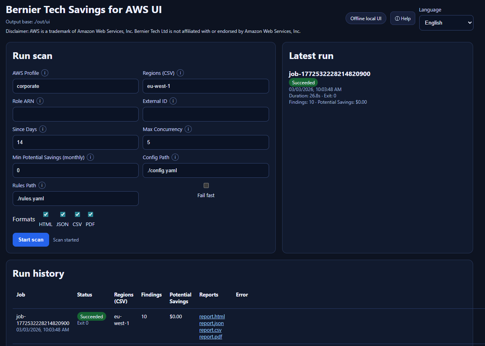
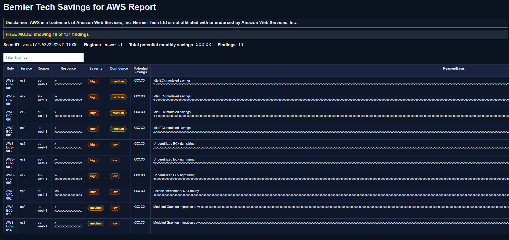
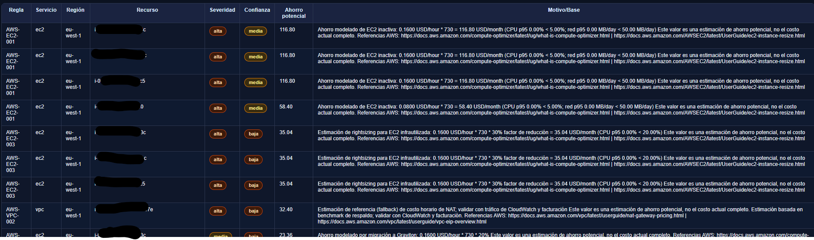
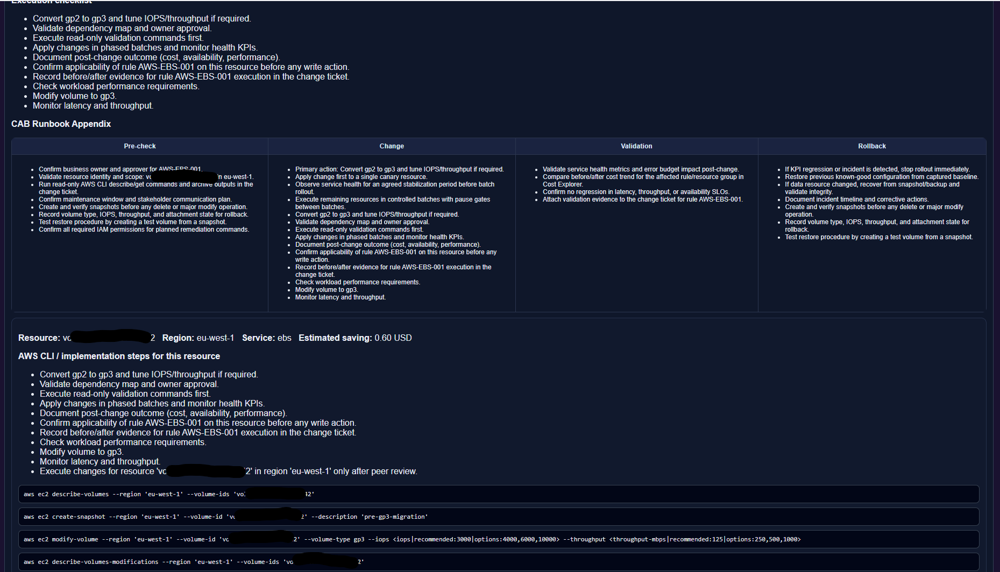

AWS Cost Optimization Platform for Security-First Teams
Bernier Tech Savings for AWS scans your cloud footprint, surfaces waste and rightsizing opportunities, and helps teams cut recurring spend with clear operational priorities.
What this tool does
The platform analyzes AWS usage patterns, identifies high-confidence savings opportunities, and generates clear JSON, CSV, HTML, and PDF reports. Teams use it for monthly FinOps cycles, engineering backlogs, and executive cost governance.
Localized UI Preview

Pricing
Free
$0
- Up to 10 findings with masked details to validate scan quality and fit.
- Best for PoC and early evaluation
Standard
$49
- Full unmasked findings in JSON/CSV/HTML/PDF for complete cost analysis and reporting.
- Best for FinOps operations and monthly optimization cycles
Pro
$249
- Everything in Standard plus remediation playbooks with implementation steps and safer execution guidance.
- Best for teams that want execution-ready cost reduction
Report Examples


